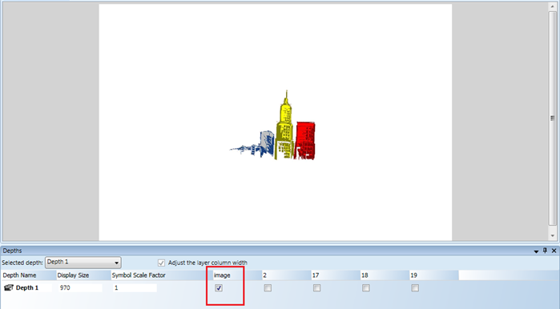
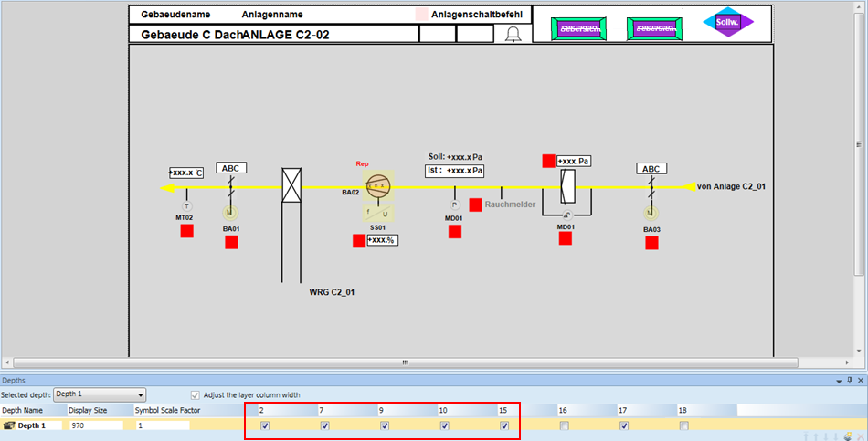
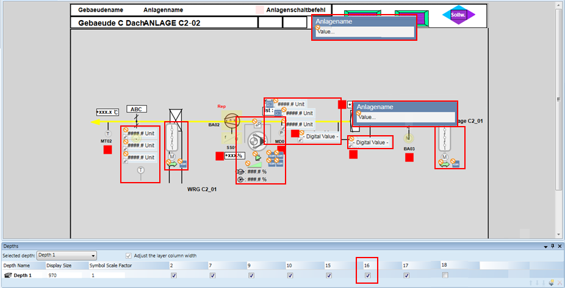
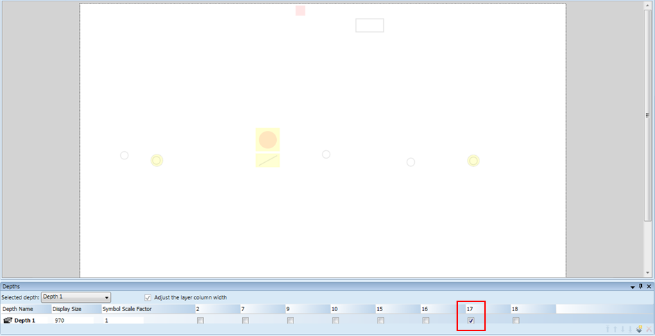
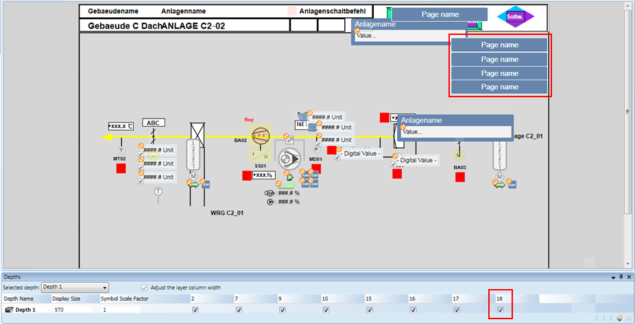

Editing Migrated Graphics
- You have migrated SICLIMAT X graphics to Desigo CC.
- In System Browser, select Application View.
- Select Applications > Graphics.
- Double-click the migrated graphic to open it in the Graphics Editor.
- The migrated graphic contains different layers with elements, such as basic shapes, Desigo CC symbols, page navigation buttons.
- Switch the layers on/off to see the graphic elements and edit them.
Example
The 0th layer (image layer) contains the image (if an image exists in the XML files). For example, in the following figure the selected image check box shows this layer.

The up to Nth layers (basic shapes layers) contain basic shapes, such as rectangle, circle, line. For example, in the following figure the selected 2, 7, 9, 10, and 15 check boxes show these layers.

The N+1 layer (symbol layer) contains Desigo CC symbol instances. For example, in the following figure the selected 16 check box shows this layer.

The N+2 layer (removable elements layer) contains basic shapes that are replaced by Desigo CC symbol instances and can be removed from the graphic. For example, in the following figure the selected 17 check box shows this layer.

The N+3 layer (page navigation button layer) contains symbols acting as page navigation buttons. For example, in the following figure the selected 18 check box shows this layer.
